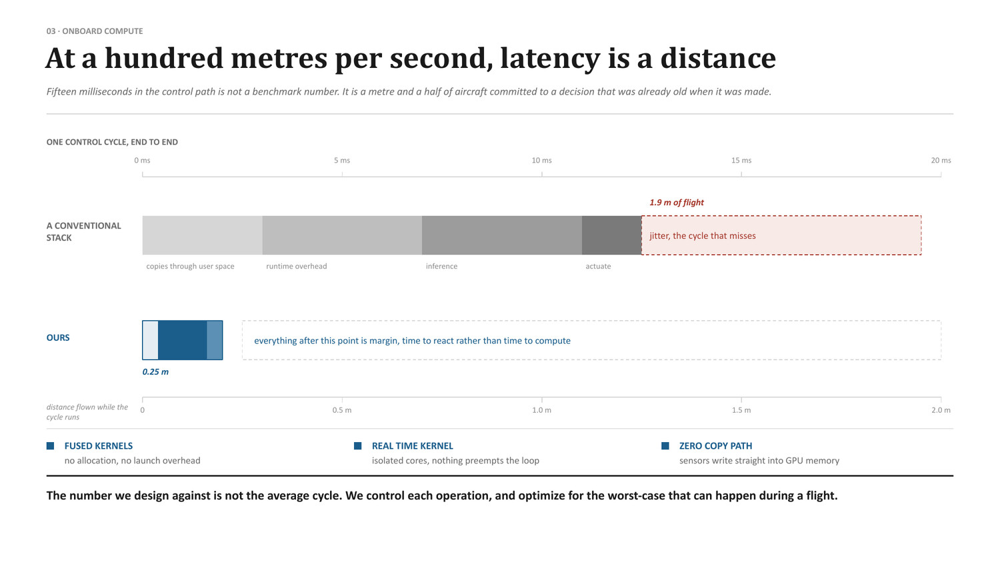

Edge Compute & Custom Inference Engine
At 100 to 250 metres per second, latency is not an abstract benchmark—it is a physical distance committed to an outdated decision. This subsystem delivers deterministic sub-millisecond execution through hardware-software co-design, isolated CPU/GPU cores, custom hand-tuned CUDA kernels, and a proprietary custom-built edge inference engine tailored for extreme compute efficiency per watt.
Translating milliseconds into metres of unguided flight
In high-speed autonomous systems, the only meaningful unit of computation latency is distance. A flight controller or vision processor running on generic software spends its cycle bouncing between user space, kernel context switches, dynamic memory allocations, and framework jitter.
At Mach 0.8 (250+ m/s), the problem becomes extreme: a 15-millisecond delay represents nearly 4 metres of blind flight. Everything saved in computation latency becomes physical aerodynamic margin—precious milliseconds spent actuating fins, adjusting thrust, or refining terminal lock rather than waiting for an inference runtime to return a tensor.

Why off-the-shelf deep learning frameworks fail in flight
Standard inference runtimes—including TensorRT, ONNX Runtime, and PyTorch Mobile—were engineered for enterprise servers, cloud clusters, or consumer devices. They prioritize batch throughput, broad operator compatibility, and automated model parsing over hard real-time determinism. In an expendable high-subsonic weapon, these assumptions become critical failure points:
| System attribute | Generic runtime (TensorRT / ONNX) | Apollyon custom inference engine |
|---|---|---|
| Memory management | Dynamic heap allocation (malloc/free); risks heap fragmentation and page faults. | 100% static allocation; all tensor buffers pre-allocated and pinned at boot. |
| Kernel launch overhead | Generic driver queueing; separate launches for activations, normalization, and bias. | Fused custom CUDA kernels; single-kernel unrolled execution per neural block. |
| Operating system preemption | Cooperative multithreading subject to OS context switches and thread interrupts. | Isolated core affinity; dedicated CPU cores with interrupts completely masked. |
| Sensor-to-memory transfer | Camera/IMU data copies through OS kernel space into host RAM, then to GPU VRAM. | Zero-copy direct DMA; sensors write directly into unified GPU address space. |
| Latency profile | Low average latency, but high tail jitter (99.9th percentile exceeds 25 ms). | Zero tail jitter; worst-case execution time equals average execution time. |
The proprietary Apollyon execution core
Apollyon builds a proprietary, custom-built inference runtime tightly co-designed with our onboard embedded silicon. Three core innovations provide deterministic sub-millisecond execution:
Hand-tuned fused CUDA kernels
Every neural network architecture in our guidance and navigation stack is compiled into hand-written CUDA and SIMD kernels. Operations such as LayerNorm, SiLU activation, matrix-vector multiplication, and sensor feature unpacking are merged into single monolithic kernel launches. Intermediate activations never leave fast GPU register and shared memory, eliminating high-latency VRAM round-trips.
Strict real-time core isolation
The compute module partitions physical silicon. Flight-critical guidance and direct-actuator neural loops run on dedicated, isolated CPU cores configured with Linux PREEMPT_RT. Non-critical tasks (telemetry compression, health monitoring) run on separate cores. Interrupts are redirected, ensuring the control thread is never preempted.
Zero-copy direct-to-GPU DMA
High-rate sensors—including high-speed CMOS global-shutter cameras, tactical IMUs, and radar altimeters—stream data directly into pinned unified GPU memory via PCIe Direct Memory Access (DMA). The standard triple-copy penalty across Linux kernel buffers is eliminated entirely.
Expendable weapons and high-speed interceptors operate inside sealed composite airframes without heavy fans or liquid radiators. By eliminating redundant memory copies and optimizing kernel instruction pipelines, our custom engine reduces compute power consumption by over 40% compared to generic frameworks, keeping silicon junction temperatures well within operating limits during sustained high-speed sorties.
Design against the worst case, not the average
In aerospace software, average latency is a vanity metric. An inference stack that averages 2 milliseconds but suffers an 18-millisecond tail spike once every five hundred cycles is a system that will experience catastrophic failure during the exact high-G evasive maneuver or terminal intercept where compute load peaks.
Every kernel, DMA pipeline, and memory access in Apollyon's compute core is profiled against its theoretical worst-case execution time (WCET). Bus latency is monitored in real time during flight tests, and any detected latency spike is treated as a flight-critical defect requiring kernel optimization.
What runs on the edge inference engine
| Platform | Workload pipeline | Execution rate | Compute constraint |
|---|---|---|---|
| Ahuti Interceptor | Direct-actuator flight control policy, adaptive world model, terminal optical target tracking. | ~500 Hz control / 60 Hz vision | Extreme low-latency loop (<1 ms); zero preemption tolerated. |
| Nightshade ADX-1 | Multi-spectral EO/IR object detection, visual odometry, autonomous terminal dive homing. | 400 Hz control / 30 Hz AI-vision | Passive conduction cooling inside sealed carbon-fiber fuselage. |
| HACM-350 | High-speed AI-DSMAC terrain scene matching, optical horizon reference, terminal LWIR silhouette correlation. | 500 Hz fin control / 20 Hz DSMAC | Mach 0.8 shock-resistant embedded compute module; 150 MB DEM cache. |
| Kamikaze USV | Hydrodynamic active trim regulation, shoreline DSMAC correlation, optical waterline tracking, peer mesh. | 100 Hz trim / 30 Hz waterline AI | Salt-mist sealed enclosure, high shock-load dampening. |
| Apollyon Cortex / MDCC | Multi-stream battlefield sensor fusion, automated target recognition (ATR), edge tactical tracking. | Multi-stream 30–60 fps | Dual GPU cluster; 100% local processing at the tactical edge. |
Platforms carrying this subsystem
Enables: Robust Control for Fast Platforms, High-Speed GNSS-Denied Navigation.